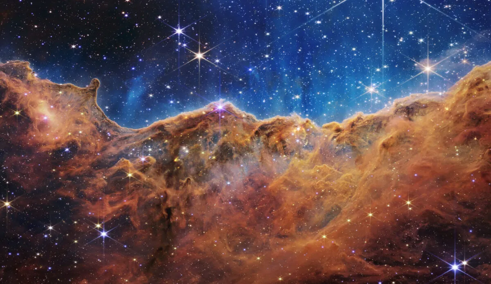

About Me

As a driven astrophysicist specializing in deep-space phenomena and quantitative modeling, my work centers on decoding the fundamental mechanics of the cosmos. From analyzing the spectroscopic signatures of distant exoplanets to simulating the gravitational dynamics of supermassive black holes, I am passionate about bridging the gap between theoretical physics and observable reality. Equipped with an extensive background in computational research and advanced data analysis, I am dedicated to pushing the boundaries of modern space exploration and uncovering the profound mysteries of our expanding universe.